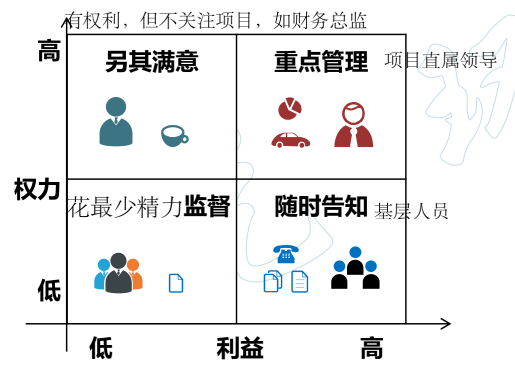

自认为受项目决策、活动或结果影响的个人、群体或组织也是干系人
✓ 系统地收集和分析各种信息，以确定考虑哪些人的利益
✓ 识别出干系人的利益、期望和影响，并把他们与项目的目的联系起来
✓ 有助于了解干系人之间的关系，以便建立联盟和伙伴合作
1. 识别全部潜在项目干系人及其相关信息，如他们的角色、部门、利益、知识、期望和影响力
2. 分析每个干系人可能的影响或支持，并把他们分类
3. 评估关键干系人对不同情况可能做出的反应，以便策划如何对他们施加影响，提高他们的支持，减轻他们的潜在负面影响
1. 权力 / 利益 方格
2. 权力 / 影响 方格
3. 影响 / 作用 方格
4. 凸显 模型（权力 / 紧急程度 / 合法性）